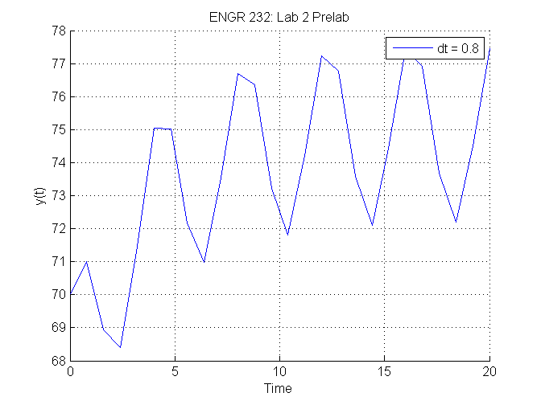

Contents
dt = 0.8
uI = 1;
tI = 0;
tEnd = 20;
t = tI:dt:tEnd;
u = zeros(size(t));
uI;
u(1) = 70;
for k = 2:numel(u)
uPrime = diffeq(t(k-1),u(k-1));
u(k) = u(k-1) + dt*uPrime;
end
dt =
0.8000
Results 1
hold on
plot(t,u)
grid on
title('ENGR 232: Lab 2 Prelab')
xlabel('Time')
ylabel('y(t)')
legend('dt = 0.8')

Solution Code 2
dt = 0.1
uI = 1;
tI = 0;
tEnd = 20;
t = tI:dt:tEnd;
u = zeros(size(t));
uI;
u(1) = 70;
for k = 2:numel(u)
uPrime = diffeq(t(k-1),u(k-1));
u(k) = u(k-1) + dt*uPrime;
end
dt =
0.1000
Results 2
plot(t,u,'r')
legend ('dt = 0.8', 'dt = 0.1')